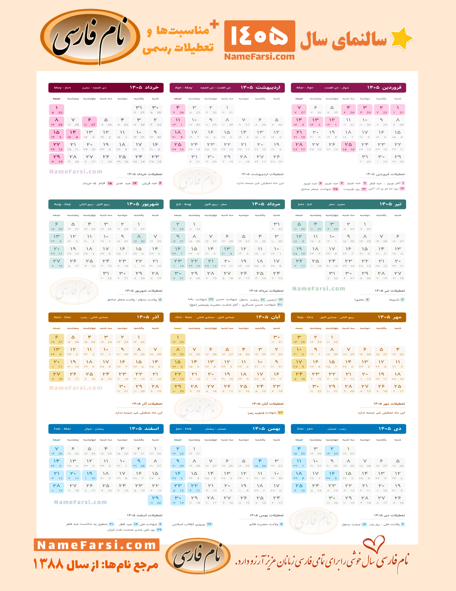

۱. طرح مسئله
در سالهای اخیر، حجم دادههای پزشکی افزایش یافته است. تحلیل انسانی نه تنها زمانبر است، بلکه با خستگی چشم پزشک، با درصدی از خطا همراه میشود. اینجاست که نیاز به هوش مصنوعی احساس شد.
۲. فرآیند آموزش
ما شبکههای عصبی عمیق را روی ۲ میلیون اسکن MRI آموزش دادیم. این مدلها یاد گرفتند الگوهای میکروسکوپی را که از چشم ماهرترین متخصصان دور میماند، شناسایی کنند.
۳. نتایج چشمگیر
سرعت تحلیل از ۴۵ دقیقه به ۳ دقیقه کاهش یافت و دقت تشخیص زودهنگام بیماریها ۲۵٪ رشد کرد که یک انقلاب در پزشکی محسوب میشود.


